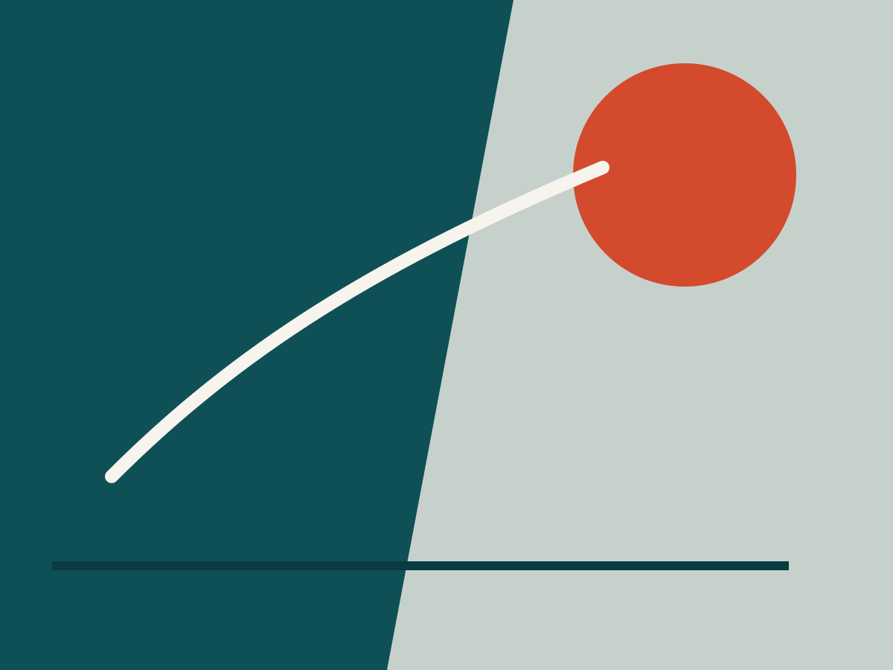

Des projets qui bougent
Des idées prennent forme ensemble
Nous faisons grandir les projets qui rapprochent les personnes et les territoires.

12projets accompagnés
8ans d’expérience
240personnes réunies
Nos activités en images
Des projets sur le terrain
Questions fréquentes
Vos questions, nos réponses
Quels types de projets accompagnez-vous ?
Le parcours s’adapte au contexte du projet.
Qui peut vous contacter ?
Toute personne ou structure porteuse d’une initiative.